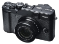

器材库 > 不可换镜头数码相机 > FinePix X20

规格总览
发布日期
2013-01-08
厂家推荐价格
70,000.00 （日元）
防水
否
影像规格
影像传感器
X-Trans CMOS
影像传感器尺寸
2/3英寸
有效像素
1200万
影像处理器
EXR 处理器 II
静态图像尺寸
L : (4:3) 4000 x 3000 / (3:2) 4000 x 2664 / (16:9) 4000 x 2248 / (1:1) 2992 x 2992；M : (4:3) 2816 x 2112 / (3:2) 2816 x 1864 / (16:9) 2816 x 1584 / (1:1) 2112 x 2112；S : (4:3) 2048 x 1536 / (3:2) 2048 x 1360 / (16:9) 1920 x 1080 / (1:1) 1536 x 1536
静态图像格式
JPEG, RAW, RAW+JPEG
画幅比
3:2, 4:3, 1:1
短片尺寸
1920 x 1080 像素 (60 fps) / 1280 x 720 像素 (60 fps) / 640 x 480 像素 (30 fps)
短片格式
MPEG4-AVC/H.264
短片音效
线性PCM/立体声
防抖系统
有
镜头和对焦
镜头结构
11片/9组
非球面镜片
3片
焦距
7.1mm-28.4mm
等效35mm画幅焦距
28mm-112mm
最大光圈
f/2.0-f/2.8
光学变焦
4倍
数码变焦
2倍
最近对焦距离
10cm, 微距1.0cm
自动对焦系统
混合自动对焦系统
对焦模式
单幅AF / 连续AF / MF
手动对焦
支持
曝光控制
测光模式
中央重点测光, 多分区评价测光, 点测光
曝光模式
P（程序自动曝光）, A（光圈优先自动曝光）, S（快门速度优先自动曝光）, M（手动测光曝光）
快门速度
(自动模式) 1/4 秒至1/4000*秒., (所有其他模式) 30秒至1/4000*秒.
曝光补偿
±2EV以1/3EVEV级调整
ISO感光度
100, 200, 320, 400, 640, 800, 1000, 1250, 1600, 2000, 3200, 6400, 12800, 自动, 250, 500, 2500, 4000, 5000
白平衡
白炽灯, 色温调节, 阴天, 自定义, 晴天, 水下, 荧光灯（冷白色）, 荧光灯（日光）, 荧光灯（暖白色）
自拍
10秒, 2秒
连拍
超高：约12帧/秒 (最多11幅)；高：约9.0 帧/秒 (最多14 幅)；中：约6.0 帧/秒 (最多20 幅)；低：约3.0帧/秒 （最多39 幅)
拍摄模式
肖像, 美肌, 风景, 运动, 夜景, 夜景 (三脚架),烟花, 日落, 雪景, 海滩, 聚会, 花卉, 文字, 潜水
闪光灯
内置闪光灯
弹出式
闪光模式
自动, 减轻/消除红眼, 强制闪光, 禁止闪光, 减轻红眼慢速同步
闪光涵盖范围
广角 : 约30cm 至7.0m 望远: 约50cm 至 5.0m
取景规格
取景器
光学取景器
LCD类型
TFT LCD
LCD尺寸
2.8英寸
LCD像素
48万
视野率
100%
文件输入/输出
存储卡
SD/SDHC, SDXC
数据接口
USB2.0
视频/音频接口
HDMI Mini 输出
电源
电池
NP-50 锂离子电池
续航能力
270幅
外观
颜色
黑色, 银/黑色
尺寸
117.0 x 69.6 x 56.8mm
重量
333g
newshop2014-05-25 21:324.25 分
操作性 5.00功能性 4.00美观性 5.00趣味性 5.00耐用性 3.50性价比 3.50解像力 4.00色彩还原 4.00
oldzzy2014-01-29 20:214.88 分
操作性 5.00功能性 5.00美观性 5.00趣味性 5.00耐用性 5.00性价比 4.50解像力 4.50色彩还原 5.00
破茧2013-07-28 11:074.94 分
操作性 5.00功能性 5.00美观性 5.00趣味性 5.00耐用性 5.00性价比 4.50解像力 5.00色彩还原 5.00
菜鸟伞2013-03-19 08:414.81 分
操作性 4.50功能性 5.00美观性 5.00趣味性 5.00耐用性 5.00性价比 5.00解像力 4.00色彩还原 5.00
菜鸟伞2013-01-29 11:37
产品图 / 样片
评测 / 相关文章
- 详细内容 （存档）
- ［试用］X20带给我的街头拍摄乐趣 （存档）
- ［试用］从X100到X10到X-PRO1到X-E1到X20 （存档）
- ［资讯］TIPA Award 2013 揭晓 （存档）
- ［资讯］富士高端数码相机X20官方样片欣赏 （存档）
- ［资讯］全新Fujifilm X20回归生活摄影本质 （存档）